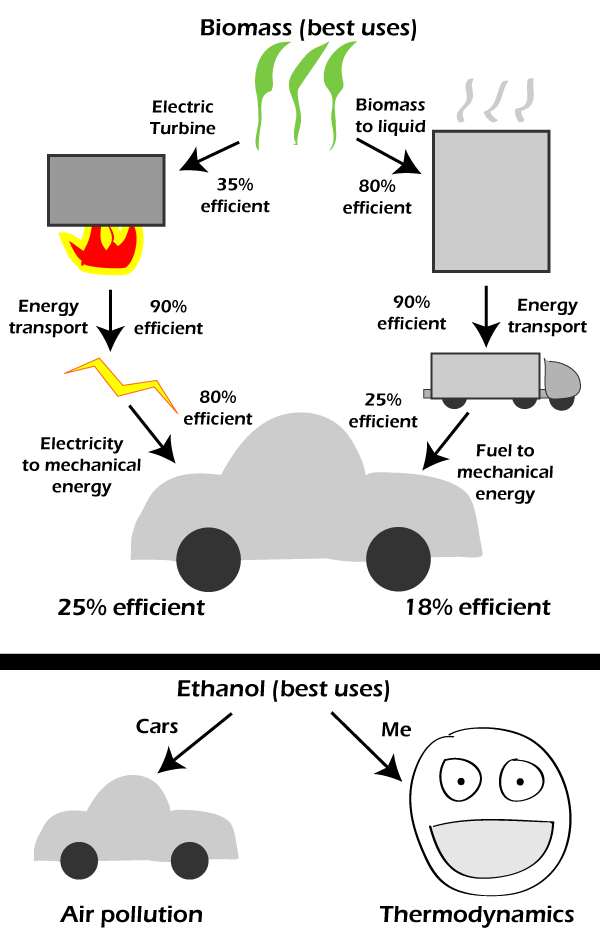

Comic JK 670
When I Feel Like It
⇤
<
?
>
⇥

⇤
<
?
>
⇥
Forum
.
RSS
.
Digg
.
Facebook
.
Reddit
.
Twitter
.
Stumbleupon
Enter your thoughts on number 670 here. Please, spam, troll, phreak, or adiabatic process. My car is powered by your mother. This face scares me. It's like... there... I don't know what to do. D= can you here me now, jason? no i didnt think so, your chasing shadows, jason. you got charlie and dave, but i wont go down, or give up, that easy. come and get me you bastard EYES? The heresy! >No, no, he's just standing in front of a wall with a strange face-like pattern drawn on it! >>THIS MAKES EVEN LESS SENSE >>>THIS LENSE EVEN MAKES SESS >>>>WOOOOOOOOOOOOOOOOOOOOOOOOO >>>>><Ted_Crilly>but not as bad as standing in front of a window that has a small piece of dirt that makes it look as if one has a small moustache</Ted_Crilly> >>Why the mouth? WHERE'S THE NECK! >>>These people have notoriously small bodies in proportion. >>>>The bigger the face, the smaller the body. Did you guys know that on Friday, June 14, 2013 we will surpass xkcd? >Actually I did. I worked it out shortly after I found this site. > Quality over quantity.. this place will CLEVER see XKCD. >>Randall, what are you doing here? >>> The raptors can't find him here. >>>> What do you mean "we"? Do you have a mouse in your pocket? ^No, he's just happy to see you. >>>>> He's using the editorial "we". Hopefully he'll remember to flush. >>>>>> or maybe it's the Royal "we" ? >>>>>>>I believe there was a comic that had calculated the date comicjk would overtake xkcd. It said the date, but expressed doubts that randall would keep exactly on schedule so there may have to be some flex room. WOOOOOOOOOOOOOO! Since when is energy transport 90% efficient?